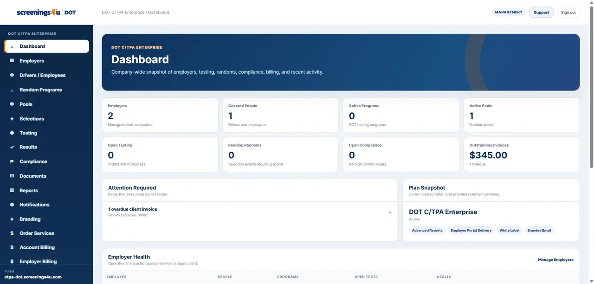
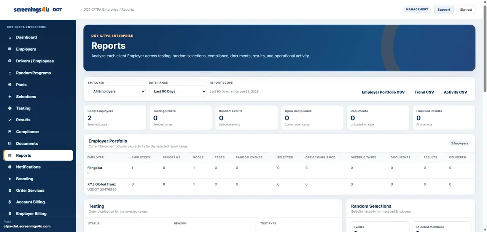

Employees & Drivers
Manage covered workers, program assignments, locations, status and account-level workforce records.
Manage covered employees, programs, random pools, testing orders, results, compliance activity, documents and reporting from one employer workspace.

Features are tied to the workforce records, testing activity and compliance obligations behind each program.
Manage covered workers, program assignments, locations, status and account-level workforce records.
Manage pool participation, eligibility, random selections and related testing activity.
Create and track testing orders, use enabled collection sites and keep order status visible.
Track open compliance work, post-accident activity, policy acknowledgments and training records.
View authorized result summaries and sensitive detail when your plan and permissions allow it.
Keep compliance documents, certificates and workforce records connected to the people behind them.
Generate standard operational reports and advanced reports / MIS on eligible plans.
Use testing and compliance notifications to surface work that needs attention.

Random testing stays inside the same employer workspace as the people, programs and testing activity that drive it.
Professional and Enterprise employer plans add deeper compliance visibility and controls for regulated workforce operations.


Operational reports, documents, certificates and audit history stay attached to the employer account instead of living across disconnected tools.
Current employer subscriptions in Workforce DOT are structured as Essential, Professional and Enterprise.
For direct employers managing one company with core testing, random program, compliance, documents, notifications and standard reporting tools.
View plan details →Adds deeper compliance tools, collection-site access, advanced reports, DER/supervisor management, sensitive results and training records.
View plan details →Adds integrations, audit history, branded email, bulk workforce import and enterprise-level operational controls.
View plan details →